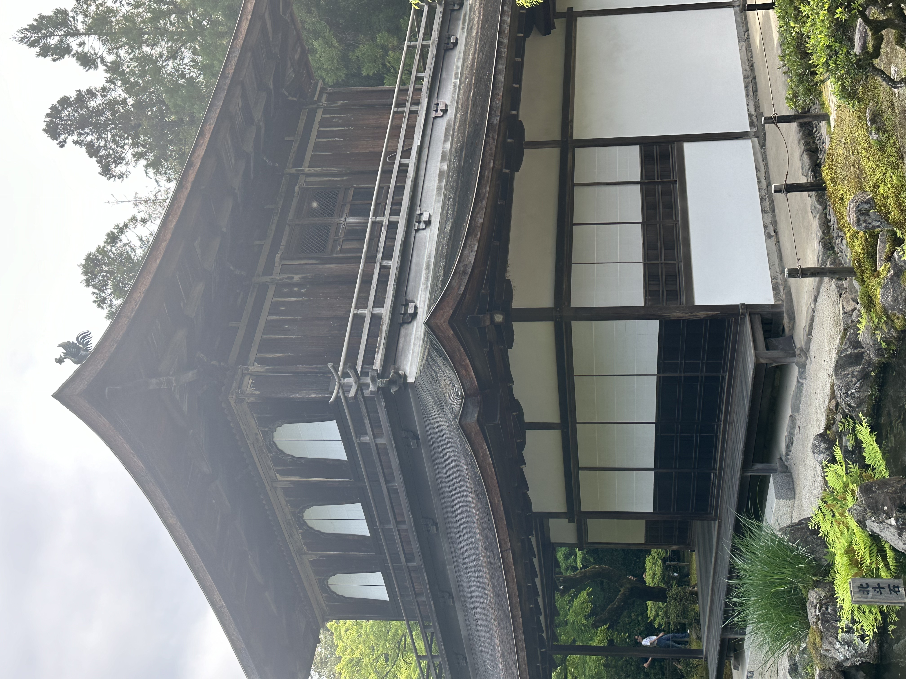

歴史と概要
銀閣寺（正式名称：東山慈照寺）は、京都市左京区に位置する禅寺で、室町時代に創建されました。銀閣寺は、足利義政によって1482年に建立され、当初は彼の隠居所として使用されましたが、後に禅寺として整備されました。義政は東山文化の中心人物であり、銀閣寺はその文化を象徴する場所として知られています。
銀閣
銀閣寺の中心建物である銀閣（観音殿）は、二層構造の美しい建築です。上層には観音菩薩が安置されており、屋根には鳳凰の彫像が飾られています。この建物は、質素な美しさと静謐な雰囲気を兼ね備えており、訪れる人々に深い感銘を与えます。
東求堂
東求堂は、銀閣寺の敷地内にある建物で、義政の書斎として使用されました。内部には日本最古の書院造りの部屋「同仁斎」があり、この部屋は質素ながらも洗練された美しさを持っています。東求堂は、銀閣寺の歴史と文化を深く理解するための重要な場所です。

庭園
銀閣寺の庭園は、枯山水庭園と池泉回遊式庭園の二つの要素を持ち合わせています。庭園内には、白砂で描かれた「銀沙灘」や円形の「向月台」があり、これらは月光に照らされる夜の景色が特に美しいとされています。また、四季折々の景色を楽しむことができ、訪れるたびに新しい発見があります。

最後に
銀閣寺は、その歴史的価値と美しい建築、そして心を落ち着かせる庭園が一体となった場所です。訪れる人々は、ここで静けさと美しさを感じながら、禅の精神に触れることができます。京都を訪れた際には、ぜひ銀閣寺を訪れてみてください。その魅力にきっと心を奪われることでしょう。